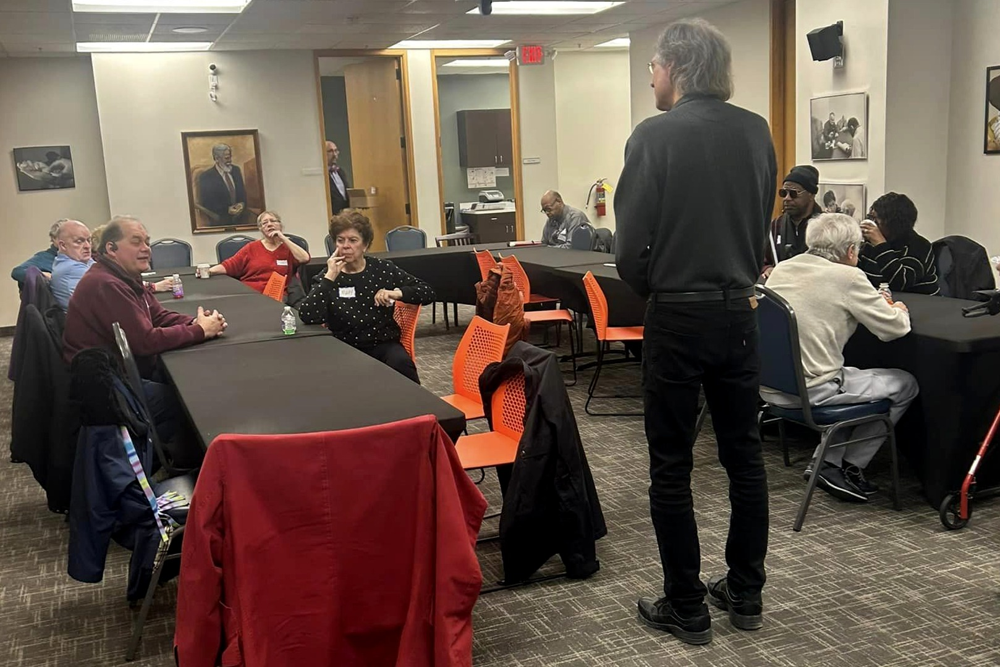
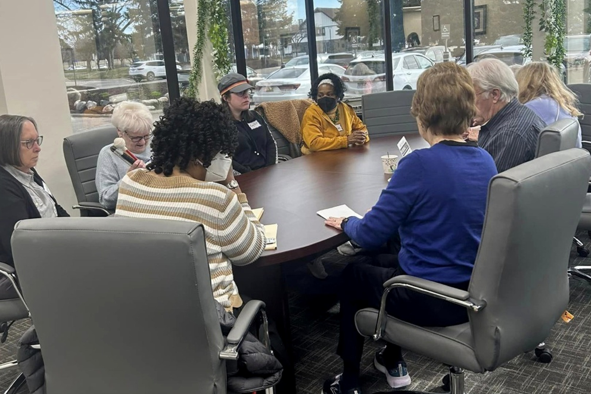
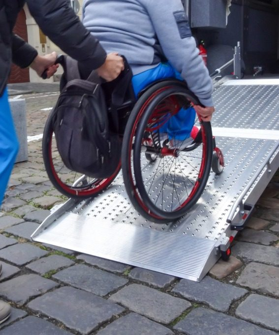
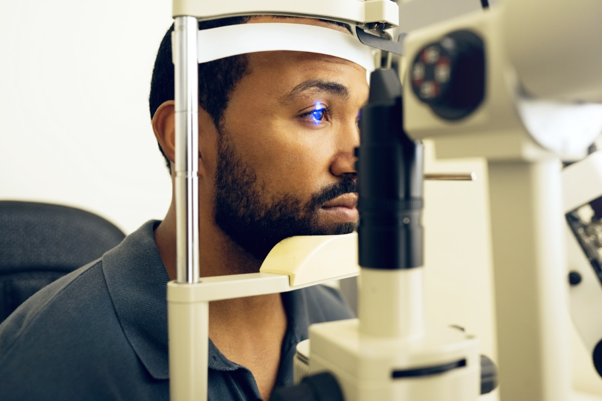

Our Services
Every GDABVI service is provided free of charge and is available online, onsite, in-home, or virtually. Our whole-person approach helps people adapt to life with vision loss — practically, socially, and emotionally. This is what Life Beyond Sight looks like in practice.

Daily Living Skills
Practical training for cooking, organizing, labeling, personal care, and managing a household confidently without sight.

Support Groups & Social Activities
The New Direction Support Group meets Tuesdays 12:00–2:00 PM, and monthly social activities connect you with people who understand the journey.

Case Management
One-on-one help navigating basic needs, benefits, referrals, and the resources that keep life moving forward.

Orientation & Mobility
Learn to travel safely and independently — indoors, outdoors, and on public transit — with a trained O&M specialist.

Eye Health Education
Our Education Series covers eye conditions, prevention, treatment, healthy living, and safety — with low vision device guidance.
Technology Training & Learning Lab
JAWS-equipped PCs, screen reader training, and open Learning Lab hours every Tuesday and Friday, 10:00 AM–2:00 PM.
Paratransit assistance
Reliable transportation matters. Our Orientation & Mobility Specialists help clients obtain and renew MetroLift and SMART paratransit service.
Call 313-272-3900 and ask for paratransit assistance.
How to get started
- Choose how you'd like to meet. We provide virtual, on-site, and in-home services.
- Complete our accessible intake. You'll be contacted after we receive your forms.
- Book your appointment. Appointments are required for in-person services — reserve online or call 313-272-3900.
- Prefer to talk it through? Call the office for guidance and assistance. Virtual classes and support need only a landline or cell phone.
- Join in. An RSVP is required for special activities — then you're part of the community.